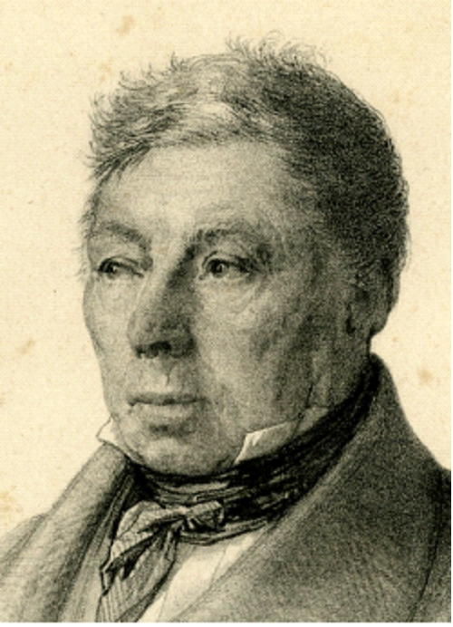
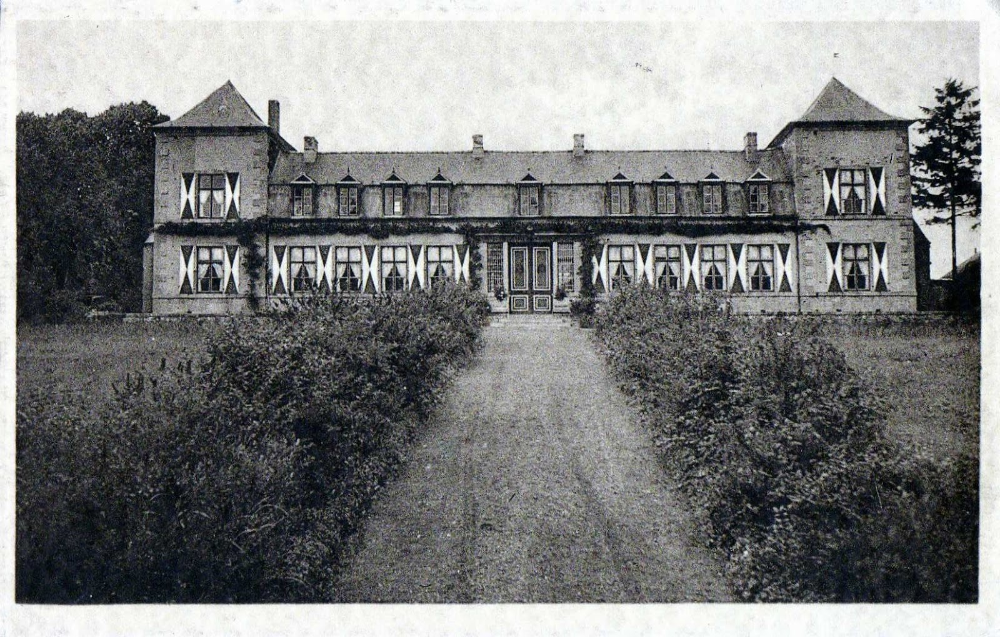
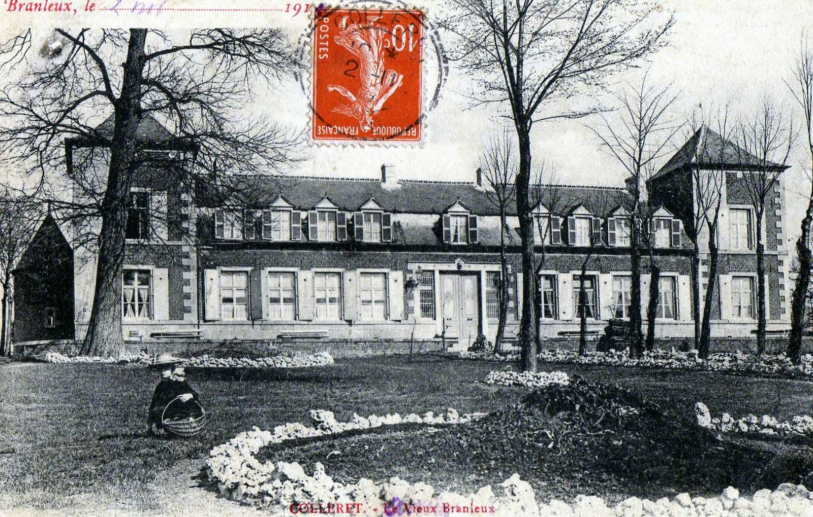
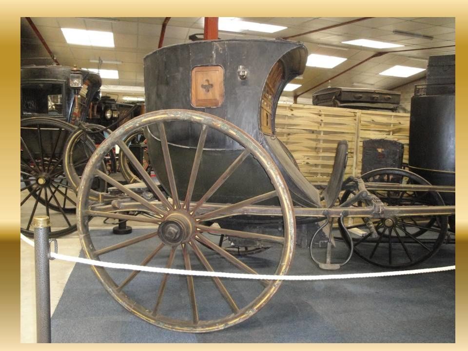

Biographie de la branche Bonte-Pollet
Biographie de la branche Bonte-Pollet
Rédigé par Arnaud Saint-Léger en 2025 sur la base des sources indiquées en bas de page.
Dans notre famille, on a souvent entendu dire qu'un de nos ancêtres avait été maire de Lille. Ce n'était pas Philippe Saint-Léger, mais Pierre-Joseph Bonte, le grand-père de Clémence Mariage, épouse de Victor Saint-Léger.
Pour rappel, la branche Saint-Léger :
Claude (fils de) André (fils de) Georges (fils de) Victor (fils de) Philippe
Quittons donc pour un moment la lignée des Saint-Léger pour remonter celle de Clémence, épouse de Victor, dont les racines plongent dans une tout autre histoire, celle du grand négoce lillois et du bouillonnement politique du XIXᵉ siècle.
Adélaïde Sapin
Victor Saint-Léger (fils de) Philippe Saint-Léger
(mariés)
Clémence Mariage (fille de) Justine Bonte (fille de) Pierre-Joseph Bonte
Louis Mariage Rose Pollet
Pierre-Joseph Bonte (1779–1864), alias Bonte-Pollet
Industriel, maire de Lille et représentant du peuple
Pierre-Joseph Bonte-Pollet est né à Lille en 1779, à l'aube d'un siècle de bouleversements. Il était fabricant et marchand huilier. Il a acquis une fortune considérable dans le commerce de l'huile, notamment en tant que négociant à Lille. Sa carrière industrielle s'est ensuite diversifiée, incluant des investissements dans diverses entreprises lilloises.

Son épouse, Rose Pollet, appartenait à une famille d'industriels du textile. La famille Pollet était bien établie dans l'industrie textile de la région, notamment à Roubaix, où elle a joué un rôle clé dans le développement de l'industrie textile locale. Ils n'ont eu qu'un enfant, Justine Bonte.
Sous la Restauration et la monarchie de Juillet, il s'engagea activement dans les luttes du parti libéral. Il fut élu maire de Lille puis, en avril 1848, représentant du peuple à l'Assemblée constituante du Nord, avec 167 844 voix sur 234 867 votants — un score considérable.
Son activité parlementaire témoigne d'un homme modéré, mais profondément attaché aux réformes : il vota pour la réduction de l'impôt sur le sel, pour l'amnistie des transportés, mais contre l'abolition du remplacement militaire ou la reconnaissance du « droit au travail ». C'était un républicain libéral, favorable à l'ordre et à la liberté économique.
À Lille, son nom apparaît parmi ceux qui ont marqué la campagne des banquets réformistes de 1847, ces grands dîners politiques où se réunissaient les libéraux pour réclamer une réforme électorale. Bonte-Pollet y présida le banquet réformiste de Lille.
Philippe Saint-Léger, le père de Victor, et Bonte-Pollet étaient présents au même banquet du 7 novembre 1847. Ils se connaissaient donc très certainement. Philippe fut aussi président du banquet de la réforme, mais ceux de 1830.
Les journées de février 1848 à Lille
Au début de 1848, Lille bouillonnait. Les archives municipales montrent que le conseil municipal, présidé par Bonte-Pollet, débattait de sujets modernes : création d'écoles, établissement de crèches publiques, organisation de l'enseignement médical. Mais en février, les échos de Paris arrivent : les banquets interdits, les émeutes, la chute de Louis-Philippe.
À Lille, le 23 février, la tension monte. Des attroupements se forment, la préfecture est envahie. Un témoin rapporte que Bonte-Pollet, accompagné de plusieurs notables dont Bianchi et Testelin, se rend à l'hôtel de ville pour protester contre les pillages et offrir le concours des républicains au maintien de l'ordre. Quelques jours plus tard, le commissaire provisoire Antony Thouret arrive de Paris, et Bonte-Pollet figure parmi ceux qui réclament sa mise à l'écart, au profit du parti démocratique local.
Le château de Branleux à Colleret
En 1832, il a acquis le château de Branleux à Colleret, dans l'Avesnois, un domaine qui avait été vendu comme bien national pendant la Révolution française. Cette acquisition a été réalisée lors d'une vente publique. Le château était alors un centre de vie prospère, avec des dépendances, des terres et une activité agricole gérée par des métayers. Ce château, vaste demeure de brique entourée de bois et de prairies, reflétait l'aisance d'un notable du Nord. C'est là qu'il accueillait sa famille et ses amis.
À la fin de sa vie, il se retire dans sa propriété de Branleux. C'est dans cette propriété qu'il trouva la mort en 1864, à 85 ans, « tué par un tonneau », selon la tradition orale.
Le château sera repris par la sœur de Clémence, Estelle Mariage, qui le transmettra à sa fille Adèle Goulu. Il est vendu sans doute vers 1919.


Le voyageur et ses enfants
André raconte :
« Il avait beaucoup voyagé, il avait une chaise de poste particulière, il est allé en Russie et faisait le voyage de Paris très souvent où ses enfants étaient en pension et habillées chez les grands couturiers. » (NDLR : je n'ai trouvé qu'un enfant, Justine. André se trompe sans doute au sujet des enfants de son arrière arrière grand-père).
Une chaise de poste était un véhicule léger et rapide, attelé à un ou deux chevaux, permettant de voyager d'un relais à l'autre en changeant d'attelage pour maintenir la vitesse. Pierre-Joseph Bonte-Pollet possédait la sienne, qu'il utilisait pour ses déplacements fréquents — notamment entre Lille, Paris et parfois jusqu'en Russie.
Le trajet entre Lille et son domaine de Colleret (environ 100 km) demandait 10 à 13 heures, avec trois ou quatre changements de chevaux. Pour rejoindre Moscou, il fallait compter près de deux semaines de route.
Bonte-Pollet se rendait souvent à Paris pour superviser l'éducation de sa fille, pensionnaire dans la capitale. Elle recevait une formation soignée et était habillée chez les grands couturiers, comme il convenait à une famille de sa condition. Ces voyages réguliers témoignent autant de son attachement à l'instruction que du confort matériel qu'exigeait ce mode de vie au XIXᵉ siècle.

Justine Bonte, fille unique
Sa fille Justine Bonte, née en 1804, vécut presque un siècle.
André écrivait d'elle :
« La seule qui avait un très grand charme, intelligente et drôle, c'était la grand-mère Mariage-Bonte. Elle avait vécu à une époque extraordinaire. Elle était née en 1804 et est morte à 99 ans. Elle avait vu le 1er Empire, deux révolutions, le Second Empire et la République. Elle avait servi le café à Napoléon Ier en 1814 »
Justine épousa Louis Mariage. De leur union naquit Clémence Mariage, future épouse de Victor Saint-Léger.
André écrivait sur son mari :
J'oublie le grand-père Mariage, mari de bonne-maman Mariage que j'ai très bien connu, il n'a laissé aucun souvenir. Sa femme disait de lui : "Mariage, c'est un 0", et elle n'en parlait jamais. Il est mort en 1888.
Clémence Mariage et Victor Saint-Léger
Clémence Mariage, la femme de Victor Saint-Léger, venait d'un milieu bourgeois éclairé et cultivé. Elle descendait de Pierre-Joseph Bonte-Pollet, industriel, maire et député, et de Rose Pollet, issue d'une lignée d'industriels du textile.
L'union de Clémence et Victor relia deux lignées, l'une industrielle et politique, l'autre républicaine et notabiliaire.
Leur fils Georges Saint-Léger portait donc dans ses veines un double héritage : celui de Philippe Saint-Léger, acteur du mouvement réformiste, et celui de Pierre-Joseph Bonte-Pollet, député du peuple et maire de Lille.
Deux hommes qui, avant même d'être liés par le mariage de leurs enfants, s'étaient rencontrés autour des mêmes idéaux de liberté et de progrès.